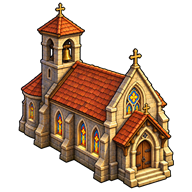

Distinguer héros blessé, soldat inapte, mort et récupération.
Les règles de ce thème
Soldats aptes, blessés et morts
Chaque soldat conserve ses PV. Au-dessus du seuil de son type, il combat ; entre 1 PV et ce seuil, il est blessé hors combat ; à zéro, il est mort. L’effectif total et l’effectif apte sont donc différents.
Un dernier soldat apte peut maintenir une troupe jouable. Les morts sont retirés à l’application du résultat : soigner les survivants ne les recrée pas.
Récupération des troupes
Les survivants d’armée et de garnison récupèrent selon les cycles, hors troupes engagées dans une bataille active. Des services de soins accessibles existent aussi dans les lieux. Soigner des PV, compléter les effectifs et promouvoir un grade sont trois opérations distinctes.
Soigner son héros
Le réglage actuel ne donne pas de soin naturel passif au héros isolé. Il peut récupérer dans un lieu de soin autorisé ou bénéficier de l’aura d’un Mage allié proche, sous réserve d’être disponible. Les soins sont plafonnés aux PV maximum.
Revenir après zéro PV
Un héros fantôme doit rejoindre une base reconnue ou une chapelle accessible pour revenir en jeu.
| Situation | PV rendus | Conditions principales |
|---|---|---|
 | 50 % du maximum | Base reconnue ou chapelle autorisée |
| 75 % du maximum | Présence et accès validés |
Le pourcentage s’applique aux PV maximum du héros. Une contrainte de scénario, notamment une captivité, peut empêcher le retour. Ouvrir une fiche ou voir une animation ne constitue pas une résurrection.
Exemple : un héros avec 20 PV maximum
Le retour standard rend 10 PV. Dans une chapelle de niveau 2 autorisée, il rend 15 PV. Le héros ne revient donc pas automatiquement en pleine santé.